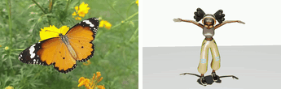
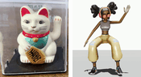
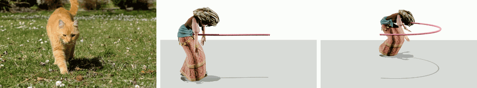
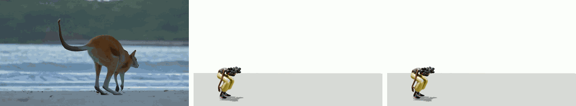
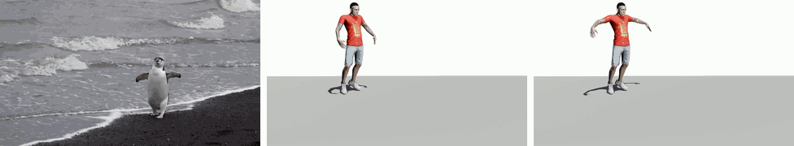
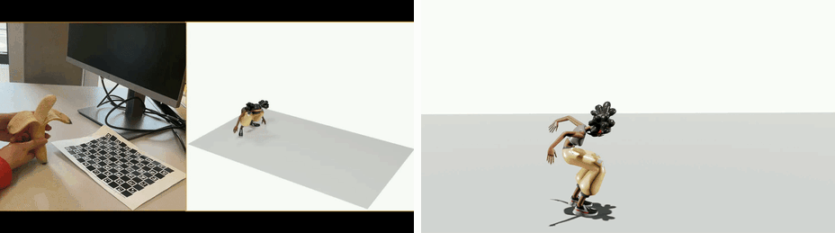
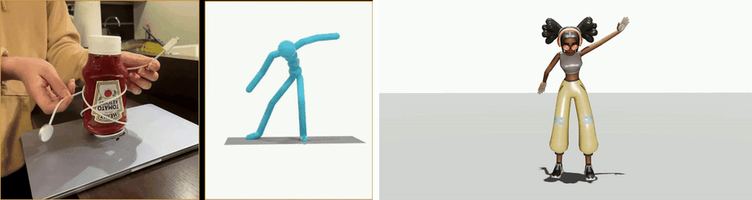

AnyAct: Towards Human Reenactment of Character Motion From Video
1Peking University, China 2Nankai University, China 3The University of Hong Kong, China 4Zhejiang University, China 5Pengcheng Laboratory, China
arXiv 2026
What is AnyAct?
AnyAct reenacts human motion from arbitrary character videos. It converts sparse 2D motion cues from animals, cartoons, objects, and stylized characters into plausible 3D human motions that preserve the source action semantics. Given monocular videos of non-human characters with diverse topologies, AnyAct reinterprets their characteristic motion patterns as plausible human performances rather than reproducing their source structures literally. Shown here are reenactments of (a) kangaroo-like jumping, (b) butterfly-like wing flapping, and (c) beckoning-cat-like waving.
Butterfly-like wing flapping

Beckoning-cat-like waving

Method Overview

Given reference videos of characters, AnyAct first extracts local sparse 2D joint trajectories as transferable motion cues from the input video using our model-ensemble-based Versatile Feature Extractor (VFE). These cues are then injected into a human motion generator (MoMask++) through the ControlNet-like 2D Local Adapter (2D-LA) to produce the initial human reenactments that follow the observed character dynamics.
More Results
Dancing with side-to-side swaying

Deer-like walking

Penguin-like walking

Monkey-like walking

Dinosaur-like walking

Seal-like walking with side-to-side swaying

Mechanical-spider-like in-place jumping

Toy-robot-like walking with side-to-side swaying

Trajectory Control and Intuitive Editing
Cat-like walking with forward and half-circle trajectory control

Editing the height of human when perform kangaroo-like jumping

Editing the arm spread of human when perform penguin-like walking

Generalization to the reenactment of human characters.


Physical-Proxies-Based Reenactment (Comparsed to DancingBox)


Citation
@article{chen2026anyact,
title={AnyAct: Towards Human Reenactment of Character Motion From Video},
author={Chen, Liuhan and Zhong, Lei and Wang, Jiewei and Shuai, Qin and Yuan, Li and Fan, Leidong and Li, Qing and Liu, Kanglin},
journal={arXiv preprint arXiv:2605.15497},
year={2026}
}